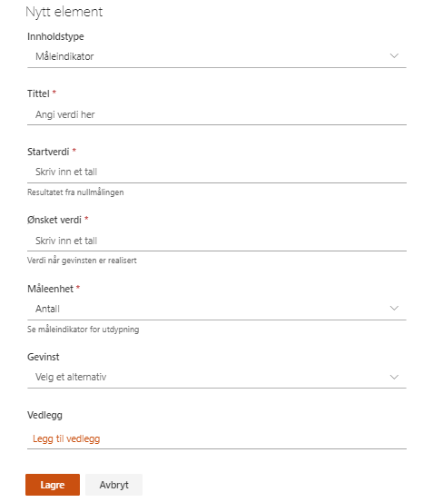

Med måleindikatorer setter du opp hvilke konkrete måleparameter du ønsker å måle i prosjektet.
Hver enkelt måleindikator settes opp med startverdi og ønsket verdi, samt at den knyttes til den gevinsten den har påvirkning mot.
